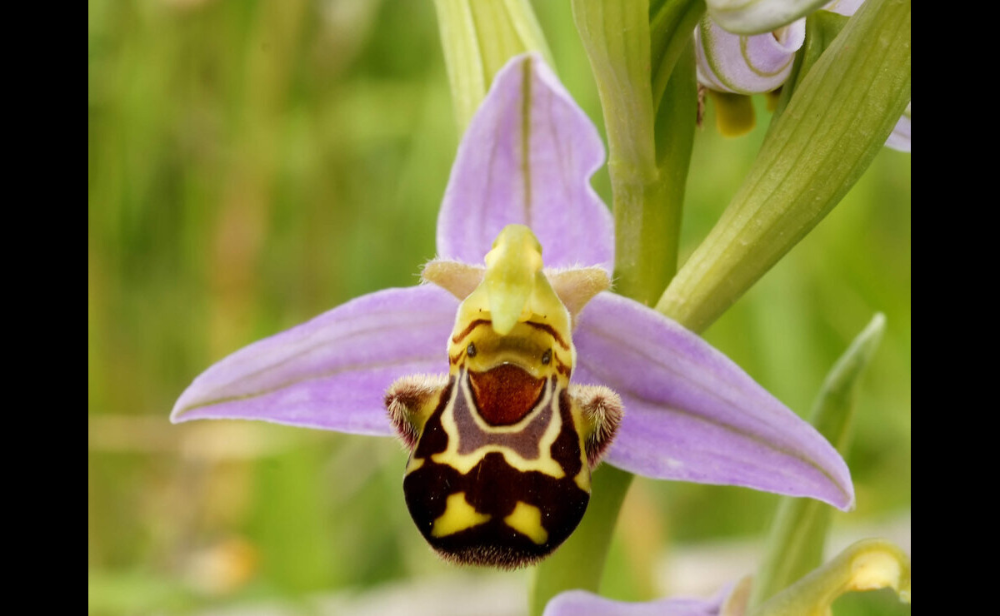
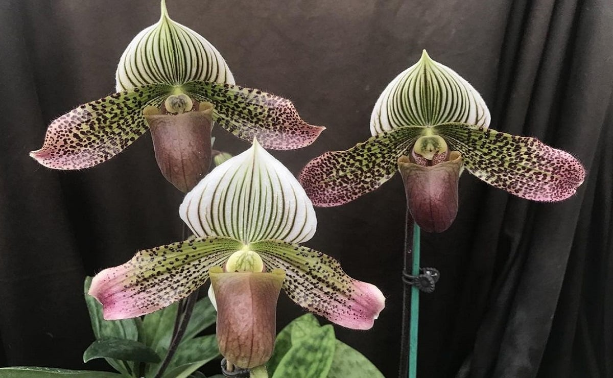
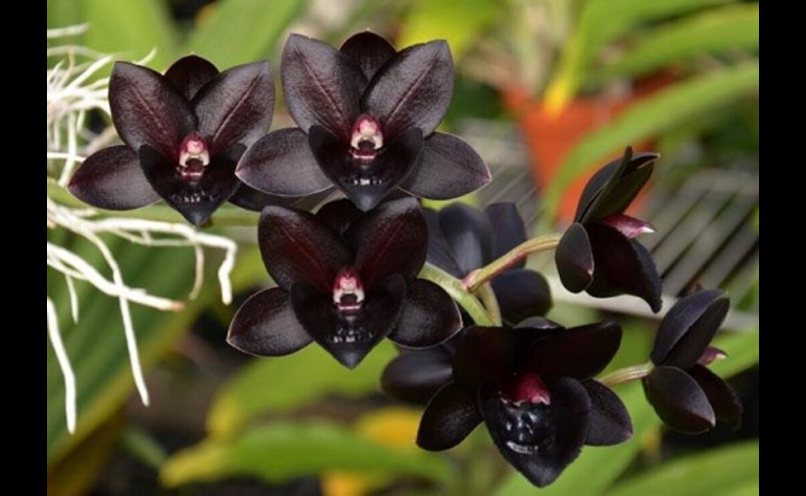
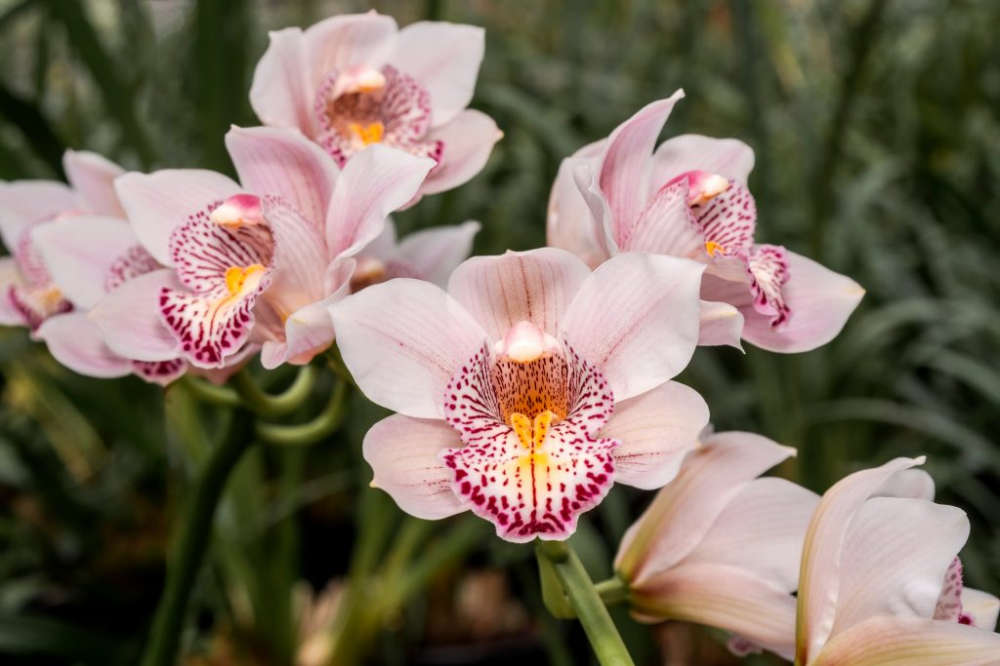
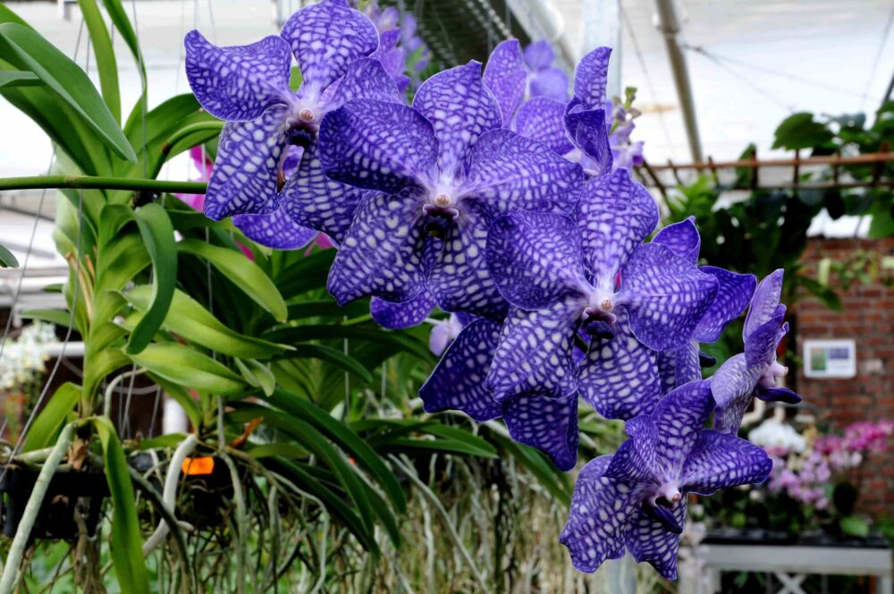

Orquídeas Raras
Espécies mais comuns
Cuidados

Orquídea rara | Ophrys apifera.

Orquídea rara | Paphiopedilum.

Orquídea rara | Catasetum.



Em geral, orquídeas gostam muito de claridade, mas não suportam a exposição direta ao sol. Sendo assim, recomenda-se colocar a orquídea próxima a alguma janela. Isso, claro, desde que ela não fique voltada para o sol entre 10h e 16h. Além disso, orquídeas também gostam de ambientes arejados. No entanto, é preciso ficar atento a locais com correntes de vento que possam derrubá-las.
Assim como ocorre com outras plantas, as raízes das orquídeas dependem de um substrato úmido e arejado, onde possam respirar. Por isso, os vasos mais recomendados para elas são aqueles mais porosos, como os de barro com furos nas laterais, ou os xaxins de palmeiras, que permitem uma drenagem mais eficiente.
A rega da orquídea é bastante inusitada, já que é mais fácil matá-la pelo excesso que pela falta de água. Principalmente para quem está mantendo a orquídea em um vaso sem drenagem, uma dica é colocar nela 3 pedras de gelo uma vez por semana.
Acredite, apesar de estranha, a técnica funciona! Já para quem a mantém em um vaso de barro ou xaxim, outra dica é mergulhá-lo em uma bacia com água e retirá-lo em seguida.
Vale lembrar que o uso de pratinhos não é recomendado, visto que o acúmulo de água neles favorece o apodrecimento da raiz.